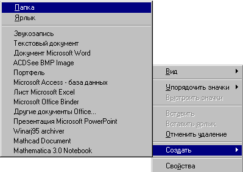

Создание папки
Перейдите в ту папку, внутри которой должна быть создана новая папка.
Щелкните на свободном месте правой кнопкой мыши.
Из контекстного меню выберите команду Создать и подкоманду Папка:

На экране появится новая папка с именем, состоящим из дефисов:
Введите нужное имя и нажмите ENTER.